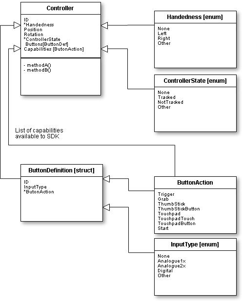
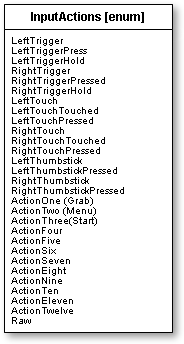

Mixed Reality Toolkit - Internal - Definitions
This folder contains all the MRTK Internal description definitions and enums.
Struct / Enum Definitions
The list of definitions for Internal MRTK structures and enums are listed below.
BaseManager
The BaseManager is the base class for all Mixed Reality Toolkit manager classes. This minimises the use of MonoBehaviour's and provides a faster framework.
ButtonAction
The ButtonAction defines the set of actions exposed by a controller. Denoting the available buttons / interactions that a controller supports.
ButtonDefinition
A Button Definition maps the capabilities of a selected controllers buttons, one definition should exist for each button profile.
Controller
The Controller definition defines the Controller as defined by the SDK / Unity.
ControllerInputType
The ControllerInputType identifies the type of button or input being sent to the framework from a controller. This is mainly information only or for advanced users to understand the input coming directly from the controller.
ControllerState
The Controller State defines whether a controller or headset is currently being tracker or not. This enables developers to be able to handle non-tracked situations and react accordingly
Handedness
The Handedness defines which hand a controller is currently operating in. It is up to the developer to determine whether this affects the use of a controller or not.
Headset
The headset definition defines the headset as defined by the SDK / Unity.
InputActions
InputActions defines the set of actions consumed internally within the MRTK. Denoting the available buttons / interactions that MRTK supports and exposed as events from the InputSystem.
MixedRealityConfigurationProfile
The MixedRealityConfigurationProfile is a Scriptable Object definition for creating profiles for the Mixed Reality Toolkit. This will instruct the toolkit how to operate and which managers to use within a project, centralizing all the configuration required for the project.
SDKType
The SDKType lists the VR SDK's that are supported by the MRTK Initially, this lists proposed SDK's, not all may be implemented at this time (please see ReleaseNotes for more details)
Relationships
For specific constructs, the following information details the relationships between each component.
Controllers
The controller definition relationships are defined as shown below: 
Headsets
The headset definition relationships are defined as shown below:

Internal MRTK InputActions
Input Actions are those internal mapped actions available to the MRTK. Each controller button would be dynamically mapped to an MRTK action for use in the SDK or output from the InputSystem.
These are listed as follows: 
Additional Information
For additional information, please see the MRTK vNext architecture outline and the vNext SDK Outline